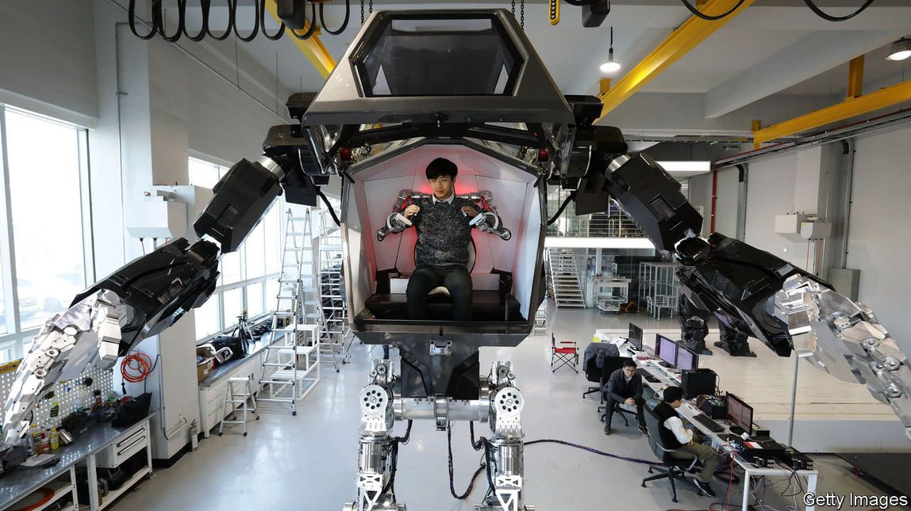

2021-05-14T15:50:43+00:00
通过创新积累资本
熊彼特会如何看待今天的经济
一本新书对现代资本主义的看法乐观得惊人【《创造性破坏的力量》书评】
约瑟夫·熊彼特（Joseph Schumpeter）认为资本主义在劫难逃。老牌公司会变得过于强大，导致腐败，最终令社会走向社会主义。今天，在社会努力应对不平等、气候变化和科技巨头之际，他在20世纪中期的那种悲观主义成为了一种风尚。不过，一些继承了熊彼特衣钵的经济学家是乐观主义者。在《创造性破坏的力量》一书中，菲利普·阿吉翁（Philippe Aghion）、席琳·安东尼（Céline Antonin）和西蒙·布内尔（Simon Bunel）将熊彼特最有力的思想应用于经济学的当代辩论中。其成果是一本全面而具权威性的著作，而且对如今这个时代来说乐观得出人意料。
基本的经济增长模型聚焦资本的积累，假定在此过程中技术会进步，生产率会提高，但对此解释不足。阿吉翁是熊彼特创造性破坏范式的当代拥护者，这一范式把创新放在核心位置，认为创意驱动了长期增长。获得垄断租金（在过分简化的经济学中被视为反常现象）的前景激励人们去创新。但创新也会通过取代上一代企业家而摧毁垄断租金。
以发展为例。自由市场的批评者喜欢主张说，20世纪末韩国等亚洲经济体的快速增长证明了国家干预的可取性，因为这些地方的政府经常保护企业免于竞争，还会补贴其出口。熊彼特范式强调的是知识。当国家远离创新前沿时，学习如何效仿最佳范例就变得很重要，而政府和企业可能会合力成就此事。但是，这之后经济体本身必须成为创新者。韩国做到了，但纯属偶然。上世纪90年代末，亚洲金融危机导致一些财阀（工业企业集团）破产，而另一些必须直面竞争——在一定程度上是因为韩国为获得国际货币基金组织的援助，作为条件而实施了某些政策。这带来了可喜的结果：一个创意迸发的经济体。
三位作者不是市场原教旨主义者。他们强调，创新是自我延续的。一个领域的进展——如内燃机——自然会带来更多的进步——而政府也可以轻轻推动企业朝正确的方向走。在应对气候变化方面，他们建议在对碳排放征税的同时也为绿色创新提供补贴。他们直截了当呼吁在航空航天等行业实行产业政策，在这些部门，进入的初始成本高昂，需求也不确定（因此私营部门就有动机等待他人先行创新）。他们敦促政府始终都要鼓励新进者而不是阻碍它们，这一点至关重要。
那么劳动力市场和不平等问题呢？作者们对眼下的一些悲观论调持怀疑态度。他们认为自动化创造的工作岗位比它淘汰的多。正如基尼系数的衡量结果所示，创新在最高层产生了财富，但似乎并未增加整体的不平等——这对那些认为亿万富翁的成功是美国最大的问题的人来说，是个微妙的反驳。创造性破坏是一股推动社会流动性的力量：加州的精英比阿拉巴马州的精英收入高，但加州最贫穷的人拥有的机会也更多。对资本收入的减税，如上世纪90年代初瑞典的做法，刺激了创新和增长。
然而，由游说和“监管劫持”造成的不平等就有如毒瘤了：它致使增长放缓，社会流动性降低。作者们还呼吁建立一个“保险国家”对财富进行再分配，保护工人免受充满活力的经济兴衰起伏的影响。他们还担心科技巨头大获成功会扼杀创造力，指出竞争监管部门应该像在意公司的市场份额那样关注催生创意的激励机制。
在同时代的凯恩斯主义经济学家中，熊彼特是个局外人。他的思想植根于真实的商业世界，而不是象牙塔。但这本书在某种程度上却是对经济学（以及第三条道路的自由主义）的辩护。相对于它宏伟的立意而言，本书的简洁意味着它不是从始至终都有说服力；有时它给出的证据很薄弱。但它的总体论点令人信服，而且在创造性破坏在政治上日渐失宠的当下，它颇有些熊彼特式颠覆的意思。
2021-05-14T15:50:43+00:00
Innovate to accumulate
How Schumpeter would view the economy today
A new book offers a strikingly upbeat take on modern capitalism
JOSEPH SCHUMPETER thought capitalism was doomed. Incumbent firms would grow too powerful, leading to corruption and, eventually, socialism. His mid-20th-century pessimism has become fashionable today, as societies grapple with inequality, climate change and tech giants. Yet some of Schumpeter’s professional heirs are optimists. In “The Power of Creative Destruction” Philippe Aghion, Céline Antonin and Simon Bunel, three economists, apply his most powerful idea to contemporary debates in their discipline. The result is sweeping, authoritative and—for the times—strikingly upbeat.
Elementary models of growth focus on the accumulation of capital, with technological progress and advances in productivity assumed but poorly explained. The Schumpeterian paradigm of creative destruction, of which Mr Aghion is a modern champion, puts innovation at its core. In this view, ideas drive long-term growth. People are motivated to innovate by the prospect of monopoly rents (an aberration in simplistic economics). But innovation also destroys rents by displacing the previous generation of entrepreneurs.
Take development. Critics of free markets like to argue that the fast growth of Asian economies such as South Korea in the late 20th century proves the desirability of state intervention, given that these places often sheltered firms from competition and subsidised their exports. The Schumpeterian paradigm emphasises knowledge. When countries are far from the frontier of innovation, the important thing is to learn how to imitate the best, which the government and businesses might manage arm-in-arm. But economies must later become innovative themselves. In South Korea this was achieved fortuitously. In the late 1990s the Asian financial crisis bankrupted some chaebols (industrial conglomerates) and exposed others to competition in part because of policies imposed as a condition of an IMF bail-out. The happy result was an economy that produces ideas.
The authors are not market fundamentalists. They emphasise that innovation is self-perpetuating. Advances in one area, such as internal-combustion engines, will naturally lead to more—and the state can nudge firms down the right path. To tackle climate change, they recommend subsidies for green innovation alongside taxing carbon emissions. They are unafraid of calling for industrial policy in sectors such as aerospace, where the initial costs of entry are high and demand is uncertain (meaning the private sector has an incentive to wait for someone else to innovate first). It is crucial, they urge, that governments always encourage new entrants rather than impeding them.
What about labour markets and inequality? The authors are sceptical about some contemporary doom and gloom. Automation creates more jobs than it eliminates, they reckon. Innovation yields fortunes at the very top but does not seem to boost overall inequality, as measured by the Gini coefficient—a subtle rejoinder to those who think that the success of billionaires is America’s biggest problem. Creative destruction is a force for social mobility: California’s elites have higher incomes than Alabama’s, but its poorest have more opportunities too. Tax cuts on capital income, like Sweden’s in the early 1990s, stimulate innovation and growth.
Inequality resulting from lobbying and regulatory capture, however, is cancerous: it brings slower growth and less social mobility. The authors also call for an “insurer state” to redistribute wealth and protect workers against the vicissitudes of a dynamic economy. And they worry about the runaway success of technology giants stifling ingenuity, arguing that competition regulators should be as concerned with the incentive to produce ideas as with companies’ market shares.
Schumpeter was an outsider among the Keynesian economists of his day. His ideas were rooted in the real world of business, not the ivory tower. This book, by contrast, is in part a defence of economics (and of third-way liberalism). Its brevity relative to its ambition means that it is not always convincing; sometimes the evidence adduced is thin. But the overall argument is compelling and, with creative destruction falling out of political favour, it carries a trace of Schumpeterian subversion. ■
2021-05-14T15:50:43+00:00
通過創新積累資本
熊彼特會如何看待今天的經濟
一本新書對現代資本主義的看法樂觀得驚人【《創造性破壞的力量》書評】
約瑟夫·熊彼特（Joseph Schumpeter）認為資本主義在劫難逃。老牌公司會變得過於強大，導致腐敗，最終令社會走向社會主義。今天，在社會努力應對不平等、氣候變化和科技巨頭之際，他在20世紀中期的那種悲觀主義成為了一種風尚。不過，一些繼承了熊彼特衣缽的經濟學家是樂觀主義者。在《創造性破壞的力量》一書中，菲利普·阿吉翁（Philippe Aghion）、席琳·安東尼（Céline Antonin）和西蒙·布內爾（Simon Bunel）將熊彼特最有力的思想應用於經濟學的當代辯論中。其成果是一本全面而具權威性的著作，而且對如今這個時代來說樂觀得出人意料。
基本的經濟增長模型聚焦資本的積累，假定在此過程中技術會進步，生產率會提高，但對此解釋不足。阿吉翁是熊彼特創造性破壞範式的當代擁護者，這一範式把創新放在核心位置，認為創意驅動了長期增長。獲得壟斷租金（在過分簡化的經濟學中被視為反常現象）的前景激勵人們去創新。但創新也會通過取代上一代企業家而摧毀壟斷租金。
以發展為例。自由市場的批評者喜歡主張說，20世紀末韓國等亞洲經濟體的快速增長證明了國家干預的可取性，因為這些地方的政府經常保護企業免於競爭，還會補貼其出口。熊彼特範式強調的是知識。當國家遠離創新前沿時，學習如何效仿最佳範例就變得很重要，而政府和企業可能會合力成就此事。但是，這之後經濟體本身必須成為創新者。韓國做到了，但純屬偶然。上世紀90年代末，亞洲金融危機導致一些財閥（工業企業集團）破產，而另一些必須直面競爭——在一定程度上是因為韓國為獲得國際貨幣基金組織的援助，作為條件而實施了某些政策。這帶來了可喜的結果：一個創意迸發的經濟體。
三位作者不是市場原教旨主義者。他們強調，創新是自我延續的。一個領域的進展——如內燃機——自然會帶來更多的進步——而政府也可以輕輕推動企業朝正確的方向走。在應對氣候變化方面，他們建議在對碳排放徵稅的同時也為綠色創新提供補貼。他們直截了當呼籲在航空航天等行業實行產業政策，在這些部門，進入的初始成本高昂，需求也不確定（因此私營部門就有動機等待他人先行創新）。他們敦促政府始終都要鼓勵新進者而不是阻礙它們，這一點至關重要。
那麼勞動力市場和不平等問題呢？作者們對眼下的一些悲觀論調持懷疑態度。他們認為自動化創造的工作崗位比它淘汰的多。正如基尼係數的衡量結果所示，創新在最高層產生了財富，但似乎並未增加整體的不平等——這對那些認為億萬富翁的成功是美國最大的問題的人來說，是個微妙的反駁。創造性破壞是一股推動社會流動性的力量：加州的精英比阿拉巴馬州的精英收入高，但加州最貧窮的人擁有的機會也更多。對資本收入的減稅，如上世紀90年代初瑞典的做法，刺激了創新和增長。
然而，由遊說和“監管劫持”造成的不平等就有如毒瘤了：它致使增長放緩，社會流動性降低。作者們還呼籲建立一個“保險國家”對財富進行再分配，保護工人免受充滿活力的經濟興衰起伏的影響。他們還擔心科技巨頭大獲成功會扼殺創造力，指出競爭監管部門應該像在意公司的市場份額那樣關注催生創意的激勵機制。
在同時代的凱恩斯主義經濟學家中，熊彼特是個局外人。他的思想植根於真實的商業世界，而不是象牙塔。但這本書在某種程度上卻是對經濟學（以及第三條道路的自由主義）的辯護。相對於它宏偉的立意而言，本書的簡潔意味着它不是從始至終都有說服力；有時它給出的證據很薄弱。但它的總體論點令人信服，而且在創造性破壞在政治上日漸失寵的當下，它頗有些熊彼特式顛覆的意思。